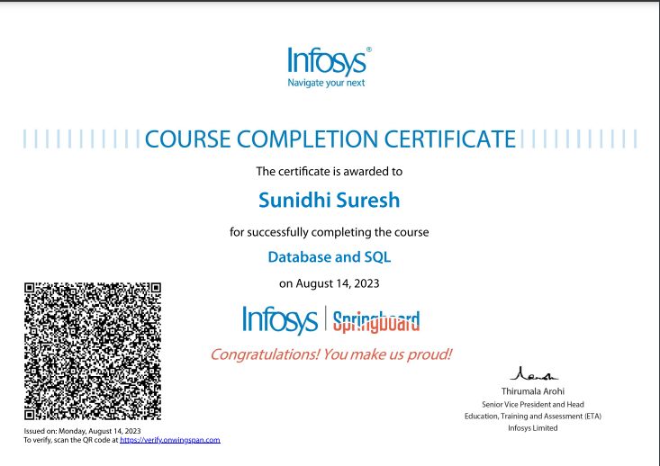
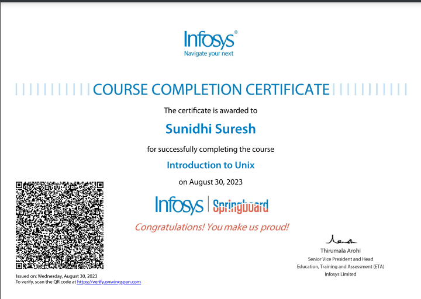
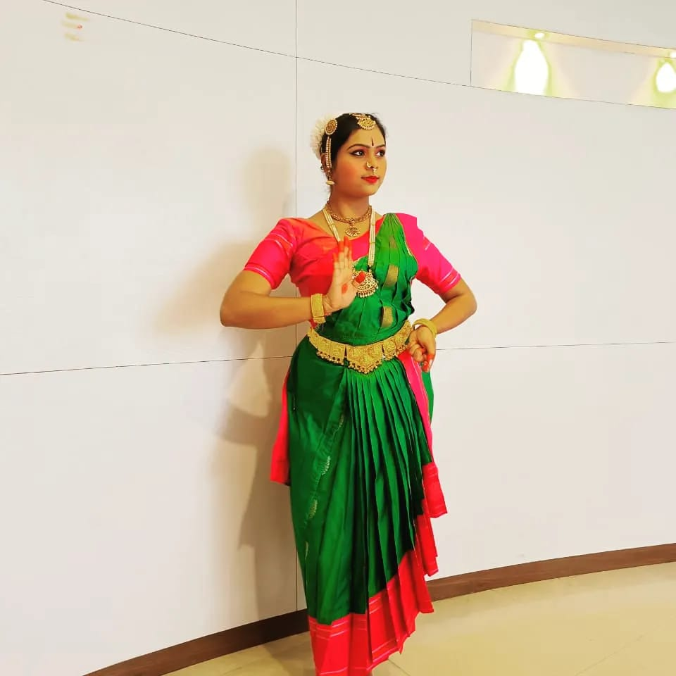

Achievements
Database and SQL
SQL is a standard language for storing, manipulating and retrieving data in databases.Our SQL tutorial will teach you how to use SQL in: MySQL, SQL Server, MS Access, Oracle, Sybase, Informix, Postgres, and other database systems. SQL stands for Structured Query Language. SQL lets you access and manipulate databases SQL became a standard of the American National Standards Institute (ANSI) in 1986, and of the International Organization for Standardization (ISO) in 1987
Introduction to UNIX
UNIX is an operating system which was first developed in the 1960s, and has been under constant development ever since. By operating system, we mean the suite of programs which make the computer work. It is a stable, multi-user, multi-tasking system for servers, desktops and laptops.UNIX systems also have a graphical user interface (GUI) similar to Microsoft Windows which provides an easy to use environment. However, knowledge of UNIX is required for operations which aren't covered by a graphical program, or for when there is no windows interface available, for example, in a telnet session.
Bharatanatyam
Bharatanatyam is an Indian classical dance form that originated in Tamil Nadu.[1][2] It is one of eight Indian classical dance forms recognized by the Sangeet Natak Akademi, and expresses South Indian religious themes and spiritual ideas, particularly of Shaivism and in general of Hinduism. I am learning Bharatanatyam since 11 years and currently pursuing Vidvat in Bharatanatyam.
Carnatic Music
![Carnatic Music]()
Carnatic music, known as Karnāṭaka saṃgīta or Karnāṭaka saṅgītam in the South Indian languages, is a system of music commonly associated with South India, including the modern Indian states of Karnataka, Andhra Pradesh, Telangana, Kerala and Tamil Nadu. It is one of two main subgenres of Indian classical music that evolved from ancient Hindu texts and traditions, particularly the Samaveda.[1] The other subgenre being Hindustani music, which emerged as a distinct form because of Persian or Islamic influences from Northern India I have completed my Junior In Carnatic Music with distinction.